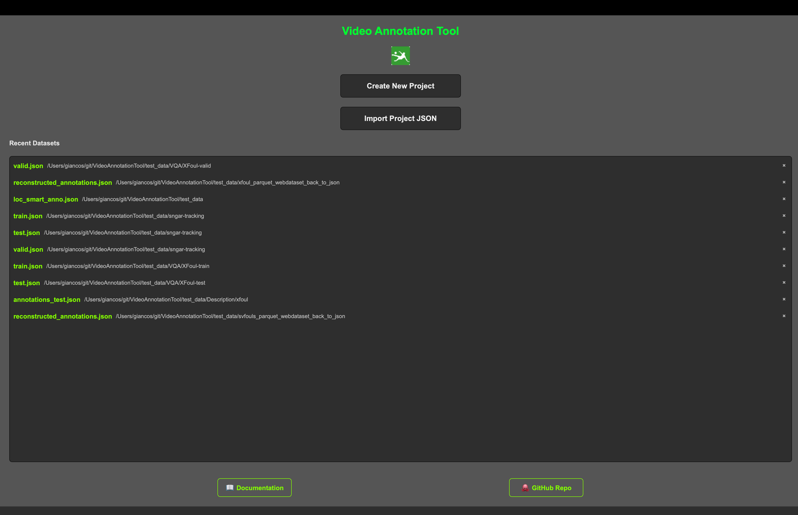
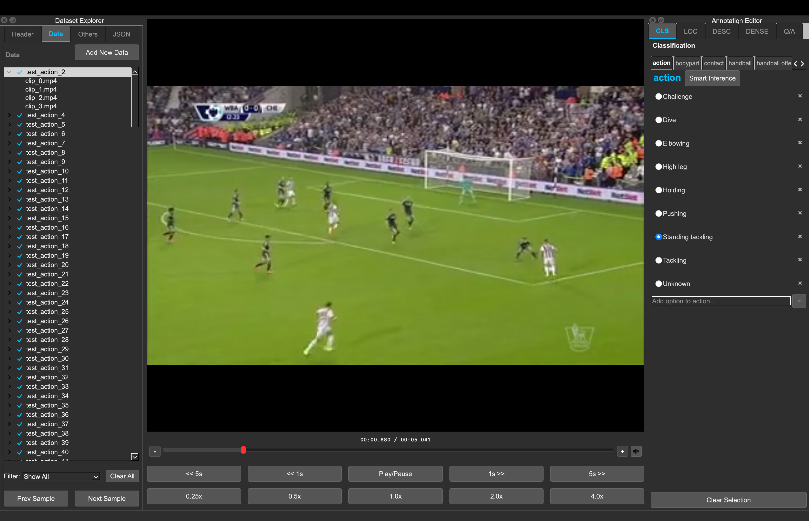
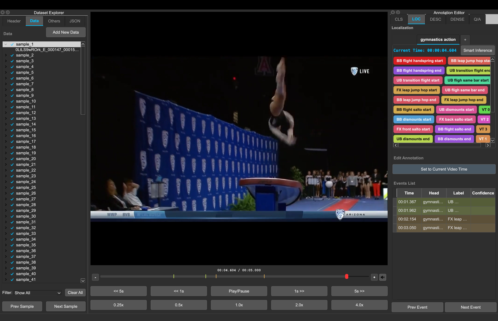
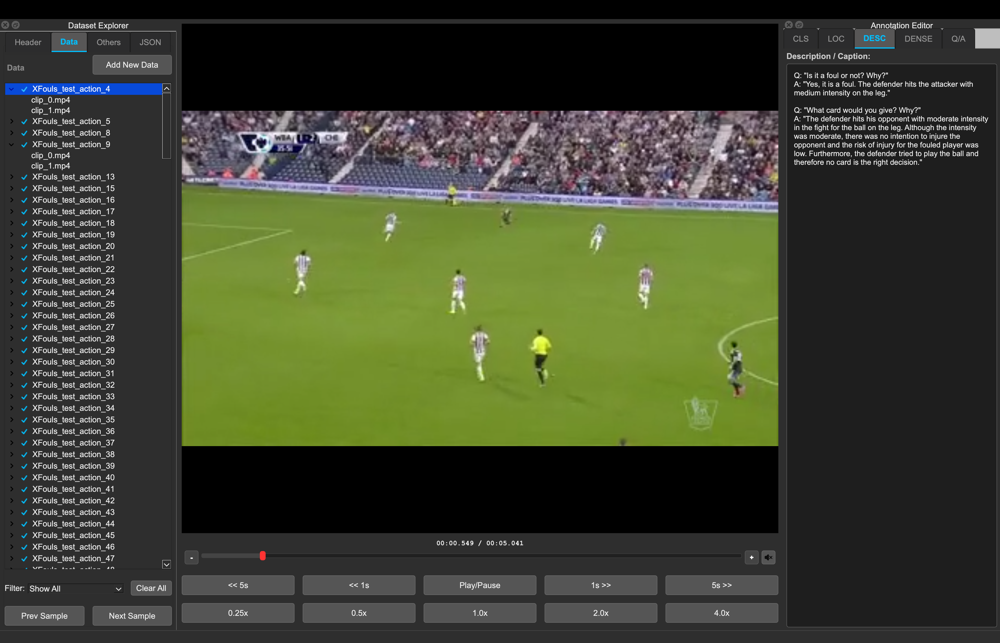
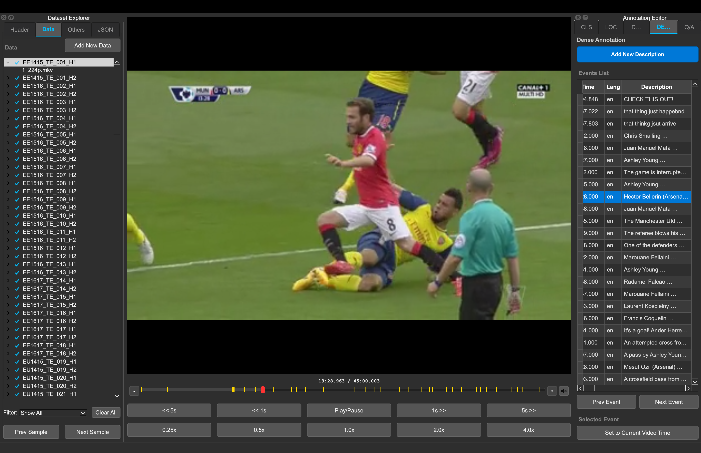
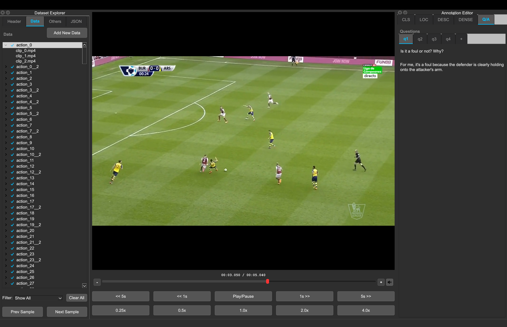

GUI Overview¶
The workspace has three regions: Dataset Explorer (left), Media Center (middle), and Annotation Editor tabs (right).
Welcome Screen¶

- Create New Dataset
- Load Dataset
- Recent datasets list
- Links to docs/tutorial and GitHub
Workspace Layout¶
The View menu controls the workspace layout. Dataset Explorer and Annotation Editor can be shown or hidden independently. Under Viewer Layout, choose Single Modality, Mosaic, or Modality Tabs. These choices are application preferences and are restored when the app restarts; they are not written to dataset JSON.
The Edit → Settings… dialog contains application-wide preferences. On its Media Controls page, comma-separated playback factors and seek intervals change the two media-control rows immediately when Apply or OK is used.
The Shortcuts page configures project, media, and Localization bindings.
Quit, Undo, and Redo keep their platform-standard shortcuts. All configurable
bindings are required and cannot overlap. In Localization, Ctrl+Return sets
the selected event to the current playhead, Ctrl+Enter accepts a selected
confidence-scored row, and Ctrl+Backspace rejects it. Bindings are stored as
application preferences rather than in dataset JSON.
The Media Controls page also provides Localization event pre-roll. A
value such as 1000 ms makes row selection and previous/next event navigation
seek one second before the event, clamped to the start of the timeline. This is
a playback preference and does not alter annotation timestamps.
The Inference settings tab selects Local or Remote execution, configures the
server URL, tests /api/v1/capabilities, maps local directories to advertised
server storage roots, and manages local model config/weights entries. Add
from Hugging Face… downloads a validated OpenSportsLib configuration and
checkpoint in the background and stages the cached paths until Settings is
applied; Add Manually retains direct path entry. See
Local and Remote Inference.
On Dataset Explorer, Samples per page controls the bounded tree window (500 by default, configurable from 100 to 2,000) and applies immediately. These preferences are stored in application settings and are never added to a dataset JSON file.
Left: Dataset Explorer¶
- Tree of samples (parent row) and inputs (child rows)
- Filter:
Show All,Show Labelled,Show Smart Labelled,Show Not Labelled Add Data,Prev,Next,Clear All- Context menu on tree rows for removing a sample or a single input
- Header inspector tabs:
- Known header fields (editable)
- Unknown/custom root keys (read-only)
- Raw JSON preview
Large datasets show one correctly sorted bounded window (500 samples by default).
Use the page number field or its ‹ and › buttons directly beneath the sample
list to jump directly or move one page. You can also scroll down again at the bottom
to open the next window, or scroll up at the top to return to the previous one.
The range below the tree shows the current sample positions.
Paging does not stop an active off-page sample; selecting another visible sample
replaces it normally. Filters apply to the complete dataset, not only the current
page. The raw JSON text is generated only when its inspector tab is opened.
Selecting a sample row preserves playback state: playing streams continue and paused or stopped streams do not start. A sample row has no focused modality, so all viewer contours are cleared. Selecting one of the active sample's input rows only highlights its viewer and likewise leaves playback unchanged.
Middle: Media Center¶
- Single Modality shows one input at a time; selecting an input row in the explorer switches the visible modality
- Mosaic shows all inputs in the existing adaptive two-column grid
- Modality Tabs keeps one tab per input so the visible modality can be selected from the media center
- Timeline + zoom
- Marker overlays (mode-dependent)
- Playback controls (seek/playback rate)
- Mute icon button (state persists via app settings)
- Per-viewer right-click actions for Go to start, Go to end, manual UTC start management, and visual UTC synchronization
The timeline zoom buttons use 1.5× steps. There is no fixed application-level zoom multiplier limit; zoom-in stops only at Qt's maximum supported widget width. Zooming preserves the center of the currently visible timeline region.
Playback factors add both a direct and reciprocal speed, with 1x always
present. For example, 2,4,8 creates 0.125x, 0.25x, 0.5x, 1x, 2x,
4x, and 8x. Seek intervals such as 1,5,10,30,60 create matching backward
and forward buttons around the Play/Pause button. Values must be positive,
finite comma-separated numbers; duplicates are normalized and displayed with
at most three decimal places. Restore Defaults restores 2,4 and 1,5 in
the dialog and takes effect after Apply or OK.
See Synchronized Multi-Modality Playback for UTC alignment rules and the synchronization workflow.
Changing the viewer layout only changes presentation. Hidden modalities remain loaded and synchronized, so switching layouts or tabs does not restart playback or move the shared timeline. During manual UTC synchronization, single and tab layouts stay pinned to the modality being synchronized.
Right: Annotation Tabs¶
All five editors end with the same prediction-review footer. Accept/Reject and bulk review actions appear only when pending predictions exist. Task-specific prediction rows remain inline in the editor above it.
The Inference Jobs dock sits below the Annotation Editor. Its single Run Inference… action opens a runtime-only dialog for the active annotation mode, with task-compatible Local/Remote models, inputs, and applicable task parameters. Server and model setup lives in Edit → Settings → Inference. The dock shows active progress, FIFO waiting jobs, cancellation, recent outcomes, and timestamped per-job details while leaving the status bar unobstructed. It hides when the project closes and the welcome screen is restored; its View action is disabled there, and its prior visibility returns with the workspace. One Local and one Remote job may run at the same time, and more runs can be queued without blocking the annotation workspace. Predictions stay associated with the sample from which each request was submitted even if another sample is selected before completion, and completion does not switch the active annotation or head tab.
Classification (CLS)¶

- Edit label heads and labels
- Supports single-label and multi-label heads
- Manual edits are saved immediately on effective change
- Pending labels have inline Accept/Reject controls
Localization (LOC)¶

- Spot events at current playhead time
- Head/label add/rename/delete + per-label colors
- Event table supports edit, delete, confirm/reject smart events
- Configured review shortcuts accept or reject the selected confidence-scored row while Localization is active, then advance to an adjacent row
- Time shows full UTC when resolvable and relative time otherwise; media seeking still uses the projected timeline position
- Pending events are visually distinct and can be reviewed inline
Description (DESC)¶

- Ordered caption list with selected-row variant, language, and text editor
- Add/delete controls and autosave after a short idle delay
- Existing optional caption metadata is preserved when visible fields change
Dense Description (DENSE)¶

Add New Descriptionopens a modal and inserts at current playhead time- Dense events are editable/deletable in the table
- Time shows full UTC when resolvable and accepts ISO-compatible UTC edits
- Events remain navigable by their projected
position_ms
Question/Answer (Q/A)¶

- Per-sample question groups
Addopens a question-entry dialog with previous dataset questions and custom text entry- Double-click or right-click a question group to edit it; right-click can also remove it
Answeropens a multiline answer dialog- Double-click or right-click an answer to edit it; right-click can also remove it
- Multiple answers per question
- Edits autosave after short idle delay